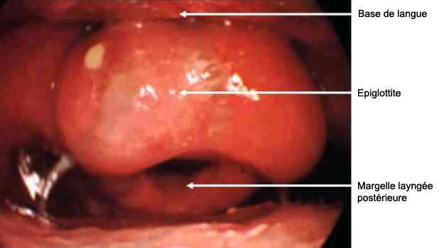
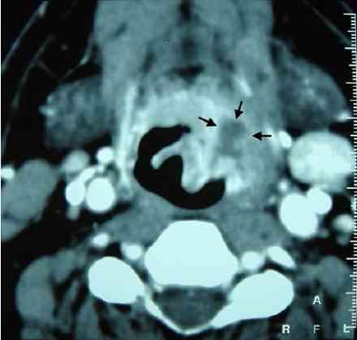
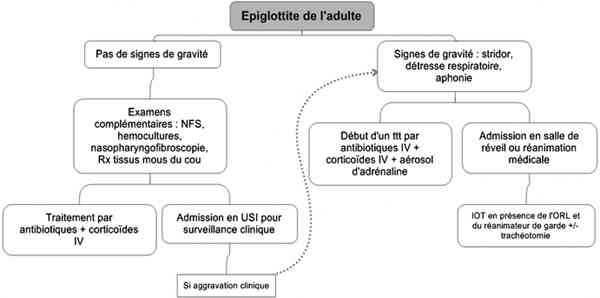

Bienvenue Sur Medical Education
Epiglottite de l'adulte
Spécialité : infectieux / orl /
Points importants
-
Définition, épiglottite aiguë ou laryngite oedémateuse sus-glottique = inflammation aiguë de la région sous-glottite de l'oropharynx, atteignant épiglotte et aryténoïdes
-
Etiologie bactérienne majoritairement (Haemophilus influenzae type B le plus fréquent)
-
Diminution de l'incidence depuis l'avènement de la vaccination Haemophilus influenzae B
-
Evolution très rapide même si chez l'adulte la présentation de la maladie reste moins fulminante que chez l'enfant
-
Pathologie à taux de mortalité important (7%), liée à l'obstruction des VAS avec critères d'intubation difficile intrinsèque et extrinsèque
-
Bon pronostic quand traitement antibiotique précoce
Présentation clinique / CIMU
SIGNES FONCTIONNELS
Présentation clinique / CIMU
SIGNES FONCTIONNELS
Généraux
- Fièvre, en général élevée (39°- 40°C)
- Altération de l'état général
Spécifiques
- Mal de gorge (95%)
- Odynophagie / dysphagie (95%)
- Dysphonie (54%)
- Dyspnée laryngée obstructive inspiratoire/stridor
Signes de complications
- Aphonie
- Détresse respiratoire
- Troubles de la conscience/somnolence
CONTEXTE
Terrain
- Ratio homme/femme 3/1
- Age moyen de survenue 45 ans
Traitement usuel
- Récent = antibiotiques (motif/durée), corticoïdes, AINS
- Au long cours = traitement immunosuppresseur (corticoïdes, chimiothérapie)
Antécédents
- Immunosuppression (néoplasie, virale)
- Infection ORL récente
- Epiglottite
- Statut vaccinal (vaccination Haemophilus influenzae B)
- Allergique = pénicilline, bêtalactamines
Facteurs de risque
- Absence de vaccination contre Haemophilus influenzae B
- Terrain immunodéprimé
Circonstances de survenue
- Infection ORL récente
- Syndrome pseudo grippal
EXAMEN CLINIQUE
Général
- Agitation / anxiété
- Fièvre
- Etat septique
Signes de gravité
- Signes cliniques de détresse respiratoire
- Aphonie
Spécifiques
- Dysphonie/voix étouffée
- Position demi-assise spontanée - bouche ouverte - tête penchée en avant
- Dyspnée laryngée obstructive inspiratoire/stridor
- Recommandations = ne pas mobiliser patient ni réaliser d'évaluation clinique invasive (ouverture buccale simple, pas de mobilisation de nuque)
Aspécifiques
- Hypersialorrhée
- Adénopathie cervicale douloureuse
Recherche de complications
- Choc septique
- Cellulite cervico-faciale
- Adénite cervicale
- Attention ne pas mobiliser la nuque du patient, méningisme (céphalées fébriles, vomissements, photophobies) +/- signes de localisation neurologiques (méningo-encéphalite)
- Asymétrie auscultatoire (pneumopathie/pneumothorax)
- BDC assourdis - douleur thoracique (péricardite)
Signes étiologiques
- Haemophilus influenzae : association possible avec pneumopathie et/ou un tableau de sepsis sévère (PA - FC - signes de choc périphériques)
EXAMENS PARACLINIQUES SIMPLES
En cas de détresse respiratoire, dyspnée
- SpO2 - FR = hypoxémie - polypnée/tachypnée/bradypnée
- En cas de douleur thoracique - sepsis, ECG = signes électriques péricardite - tachycardie sinusale
CIMU
Présentations cliniques
- Situation A = épiglottite bien tolérée (tri 2)
- Situation B = détresse respiratoire - troubles de la conscience en rapport (tri 1)
Signes paracliniques
-
Situation A = épiglottite bien tolérée
-
Situation B = détresse respiratoire - troubles de la conscience en rapport
BIOLOGIQUE
Situation A
- NFS (hyperleucocytose à PNN)
- Ionogramme sanguin - urée - créatine (estimation fonction rénale)
- CRP
- Hémocultures répétées : 2 séries en 1 heure (positives dans 25% cas)
- Prélèvements bactériologiques de gorge
Situation B
- Prélèvements bactériologiques après sécurisation des VAS
IMAGERIE
Situation A
- Systématique, nasopharyngoscopie (méthode de choix) par l'ORL = oedème et inflammation de l'épiglotte
 _261 Photo Nasopharyngoscopie : oedème et inflammation de l'épiglotte
- TDM cervical avec injection
 _262 Photo TDM cervical avec injection : épiglottite
Situation B
- Pas d'intérêt en urgence
- TDM cervicale avec injection dans un second temps après sécurisation des VAS pour poser l'indication opératoire d'emblée (drainage chirurgical)
Diagnostic étiologique
-
Par ordre de fréquence décroissante
Germes plus fréquemment isolés
- Haemophilus influenzae (25% hémocultures positives)
- Haemophilus parainfluenzae
- Streptococcus pneumoniae
- Streptocoques du groupe A
Autres bactéries
- Staphylococcus aureus
- Mycobactéries
- Bacteroides melaninogenicus
- Enterobacter cloacae
- Escherichia coli
- Fusobacterium necrophorum
- Klebsiella pneumoniae
- Neisseria meningitidis
- Pasteurella multocida
Virus
- Herpes Simplex Virus
- MNI
Champignons
- Aspergillus
- Candida albicans
Autres causes
- Causes thermiques associées à inhalation fumée marijuana ou crack
- Causes caustiques
Diagnostic différentiel
-
Inhalation d un corps étranger
-
Trachéite bactérienne
-
Ingestion de produit caustique
-
Laryngite
-
Sepsis
Traitement
-
Situation A = épiglottite bien tolérée
-
Situation B = détresse respiratoire - troubles de la conscience en rapport
TRAITEMENT PREHOSPITALIER/INTRAHOSPITALIER
Traitement
- Situation A = épiglottite bien tolérée
- Situation B = détresse respiratoire - troubles de la conscience en rapport
TRAITEMENT PREHOSPITALIER/INTRAHOSPITALIER
Stabilisation initiale
-
Situation A :
- maintien position semi assise/respect position de confort du patient
- oxygénothérapie - objectifs = SpO2 > 95%
- voie veineuse périphérique (sérum physiologique en garde veine/remplissage si besoin)
-
bi-antibiotiques précoces :
- C3G Ceftriaxone® 1 à 2 g IVD en 5 à 10 min
- + métronidazole 1 g en IVL en 30 à 60 min par 500 mg
- si besoin, antalgiques palier I paracétamol 1 g IVL
-
à visée anti-oedémateuse :
- aérosol d'adrénaline précoce 3 mg associé à 2mL sérum physiologique sous oxygène 6 à 8 L/min - renouvelable une fois après un quart d'heure à raison de 1 mg d'adrénaline associé à 4 mL sérum physiologique sinon on passe en situation B
- corticoïdes dexaméthasone IV une dose unique de 0,6mg/kg ou méthylprednisolone 1 mg/kg IVL (risque de médiastinite)
-
Situation B :
- maintien position semi assise/respect position de confort du patient
- priorité = sécurisation des VAS
- oxygénothérapie - objectifs = SpO2 > 95%
-
bi-antibiotiques précoces :
- C3G Ceftriaxone® 1 à 2 g IVD en 5 à 10 minutes
- + métronidazole 1 g en IVL en 30 à 60 minutes par 500 mg
-
à visée anti-oedémateuse :
- aérosol d'adrénaline précoce 3mg associé à 2 mL sérum physiologique sous oxygène 6 à 8 L/min - renouvelable à la suite à raison de 1mg d'adrénaline associé à 4mL sérum physiologique jusqu'à l'intubation
- corticoïdes dexaméthasone IV une dose unique de 0,6 mg/kg ou méthylprednisolone 1 mg/kg IVL (risque de médiastinite)
- en cas de détresse respiratoire et/ou dyspnée inspiratoire évolutive résistant au traitement médical (situation A), intubation orotrachéale si possible en présence du réanimateur et ORL
-
induction par :
- étomidate 0,3 mg/kg en IVL en 30 à 60 sec
- suxaméthonium 1 mg/kg en en IVD
-
préparation - idéalement dans un milieu réanimatoire - soins continus :
- prévoir sonde petit calibre 6 ou 6,5
- à proximité, kit intubation difficile car situation intubation difficile intrinsèque (oedème extensif des structures sous-glottiques) et extrinsèque = nécessité maintien patient en position semi-assise
- kit trachéotomie préparé
- alternative = cricothyroïdotomie
-
entretien par :
- midazolam 2,5 mg/h IVSE
- fentanyl 50 à 200 µg/h IVSE
- selon TDM et après avis ORL, indication chirurgie - drainage abcès
Suivi du traitement
-
Situation A :
- paramètres vitaux (conscience - SpO2 - FR - PA - FC)
- perception amélioration clinique par patient - stridor
- état septique (fièvre)
MEDICAMENTS
Situations A/B
-
Antibiothérapie en urgence :
-
C3G Ceftriaxone® :
- 1 à 2 g IVL dans G5% ou NaCl isotonique (40 mL pour 2 g) en 5 à 15 min
- 2g /j pendant minimum 48h
-
+ nitro-imidazolés métronidazole :
- 1g soit 1 flacon (100 mL/500 mg) en IVL en 30 à 60 min, renouvelable 1 fois
- puis 500 mg 1flacon/6 heures
- si immunodépression, associer un aminoside (pas de recommandations sur choix) IV pendant les premières 48h
-
C3G Ceftriaxone® :
- Dexaméthasone IV une dose unique de 0,6 mg/kg à l'admission ou méthylprednisolone 1 mg/kg
-
Aérosol d'adrénaline 3 mg associé à 2 mL sérum physiologique sous oxygène 6 à 8 L/min :
- renouvelable toutes les 15 min
- 1mg associé à 4mL sérum physiologique
- renouvelable une fois en situation A, en l'absence d'amélioration il s'agit d'une situation B, alors aérosols à la suite jusqu'à l'intubation
- effet antioedémateux
Situation A, à distance
- Amoxicilline - acide clavulanique 1 g x 3/j PO
- Méthylprednisolone 1 mg/kg puis 20mg par jour pendant 5 jours
- Antalgiques pallier I et antipyrétiques paracétamol 1 g PO/6 h
Situation B
-
Induction en Séquence rapide :
- étomidate 0,3 mg/kg en IVL en 30 à 60 sec
- suxaméthonium 1 mg/kg en en IVD
-
Entretien sédation :
- midazolam 2,5 à 15 mg/h IVSE
- fentanyl 50 à 200 µg/h IVSE
Surveillance
-
Situation A = épiglottite bien tolérée
-
Situation B = détresse respiratoire - troubles de la conscience en rapport
CLINIQUE
Situation A
- Absence d'apparition de signes de gravité sur paramètres vitaux (conscience - SpO2 - FR - PA - FC)
- Amélioration clinique (stridor)
Situation B
- Paramètres vitaux (SpO2 - FR - ETCO2 - PA - FC)
PARACLINIQUE
Situation A
- A discuter selon le terrain, glycémie capillaire
Situation B
- A discuter selon le terrain, glycémie capillaire
- A discuter, GDS AA
Devenir / orientation
-
Situation A = épiglottite bien tolérée
-
Situation B = détresse respiratoire - troubles de la conscience en rapport
CRITERES D'ADMISSION
Situation A
- En préhospitalier : transport médicalisé aux urgences avec présence d'un service ORL
- Surveillance aux urgences, service de soins continus (déchocage) en absence d'aggravation clinique
Situation B
- En préhospitalier : transport médicalisé en service de soins continus réanimatoires avec présence service ORL
- Eviter une IOT sur le terrain en pré hospitalier : la présence de l'ORL et du réanimateur est préférable
- Transport en salle de réveil si présence de critères d'intubation en urgence
CRITERES DE SORTIE
Situation A
- Absence d'aggravation clinique après une surveillance hospitalière de 12 heures
-
Ordonnance de sortie :
- poursuite de l'antibiothérapie par amoxicilline - acide clavulanique per os 1 g x 3/j pendant 10 jours
- rendez-vous de consultation de contrôle avec un ORL, délai 1 semaine à 15 jours
-
Recommandations de sortie :
- en cas de gène respiratoire, parole difficile, appeler le 15
- antibioprophylaxie des sujets contacts par rifampicine 20 mg/kg/j pendant 4 jours
- vaccination contre Haemophilus influenzae
- réévaluation à distance par médecin traitant, en cas récidive épiglottite, prévoir bilan du système immunitaire
Algorithme
-
Algotithme : épiglottite de l'adulte
 _641 Algorithme Algorithme : épiglottite de l'adulte
Bibliographie
-
Urgences médicales, par Axel Ellrodt, Edition: 5,Publié par Estem, 2005,662 pages
-
Rosen's Emergency Medicine: Concepts and Clinical Practice, par John A. Marx, Robert S. Hockberger, Ron M. Walls, Peter Rosen, James Adams, collaborateur John A. Marx, Robert S. Hockberger, Ron M. Walls, James Adams, edition: 6, illustrated, publié par Mosby/Elsevier, 2006
-
E. Pilly 2008 maladies infectieuses et tropicales, par E. Pilly, CMIT, publié par Vivactis Plus, 2007
-
Acute epiglottitis in adults: a retrospective review of 106 patients in Hong Kong Emerg. Med. J., May 2008; 25: 253 - 255
-
Radiological findings in acute adult epiglottitis. Eur Radiol 1999; 9 : 1629-31
-
Radiologic sign in the diagnosis of adult epiglottitis. Ann Emerg Med 1997; 30
-
Ward VM, Tranter RM, et al. Adult epiglottitis: an under-recognized, life threatening condition, Department of Anaesthesia, 1G323 University Hospital, 1500 East Medical Center Drive, Ann Arbor, MI 48109-0048, USA. 2Royal Sussex County Hospital, Eastern Road, Brighton, UK
-
Richard E. Chaisson, J. Louise Gerberding, Merle A. Sande and Joel Ross - Clinical Aspects of Adult Epiglottitis, West J Med. 1986 June; 144(6): 700-703
-
Adult epiglottitis, Che-Kim Tan, Khee-Siang Chan and Kuo-Chen Cheng, Department of Intensive Care Medicine, Chi-Mei Medical Center, Yungkang, Tainan, Taiwan
Auteur(s) : Jennifer TRUCHOT, Albéric GAYET